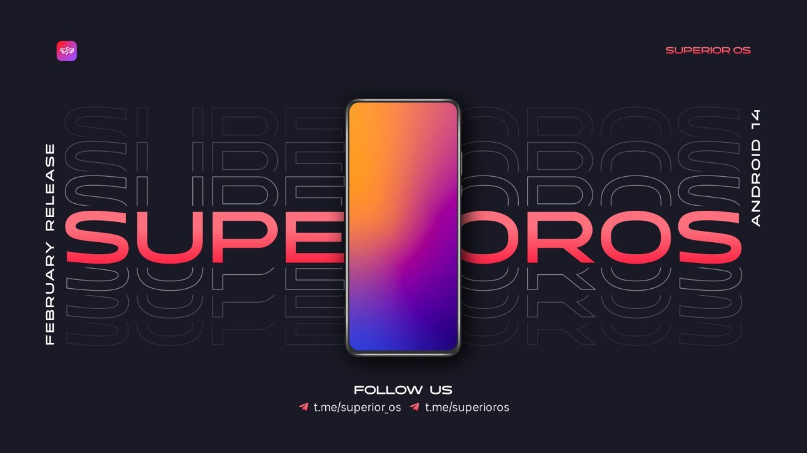
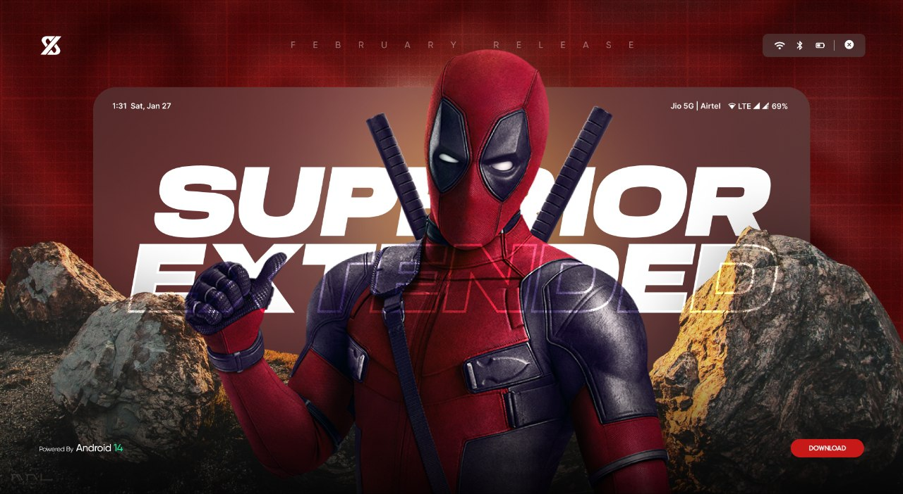

Paranoid Android Uvite Beta 3.1 (HOTFIX) | Official | Android 14
Update: 19/04/2024

By: @ghostrider_reborn
Download: HERE
Screenshot: here
Support Group: here
Changelogs:
- Fixed Fast Charging and Dolby Vision
Notes:
- This build does not have OTA, so the next build will need to be flashed manually.
- FASTBOOT RECOMMEND BUT Usable TWRP - CLICK ME (Flash After Flashing rom without reboot)
- Dirty Flashable on previous goten or gr build.
Paranoid Android Uvite Beta | Unofficial | Android 14

By: @gotenksIN Build date: 18/04/2024
Additional Details:
- Download (Fastboot package) (Link)
- Installation Instructions
- Support Group (Link)
- Installation (Link)
Changelog:
- Merge new CLO tag
- Improvements to performance and system stability
Notes:
- Make sure to be on HyperOS firmware
- Follow the guide in here for any weird app crashes or camera behaviour
Evolution X 8.5 - OFFICIAL | Android 14 Updated: 04/18/24

Additional Details:
Notes:
- Auto brightness still dead, display flickers at times (can be mitigated), haptics different from usual
- Updated OSS kernel | LosKsu.zip (Link) updated
- Updated blobs from common LOS trees
- Smart Pixels feature disabled
- Includes Dolby Vision, POCO Camera, Link to Windows
- Clean flash required if coming from Feb/March builds
Credits:
- ArianK16a, Adrianyyyy, Chaitanya, ghostrider_reborn
By @Joey Huab (Link)
Project Matrixx 10.4.2 | Official | Android 14 Updated: 18-April-2024

Additional Details:
- Download here
- Changelog: Source here | Device here
- Screenshots here
- Flashing Instructions here
- Support Group here
- Community Chat here
- Updates Channel here
Notes:
- Based on QPR2 April security patch and los based trees
- For ksu, check here or use Melt kernel. No other kernel can/should be used
- Those on Matrixx 10.4.1 can either OTA or Dirty Flash. Others Clean Flash is MUST even if OTA shows
- Based on HyperOS firmware
Credits:
- Los team for trees
- @Petrei50 & @desirexel for testing
By @kssrao13882
Paranoid Android Uvite Beta 3 | Official | A14 Updated: 17/04/2024
Additional Details:
- Download here
Notes:
- Make sure to be on HyperOS firmware
- This build does not have OTA, so the next build will need to be flashed manually
By: @ghostrider_reborn
ProjectEverest v1.1 - OFFICIAL | Android 14 Updated: 17/04/24

Additional Details:
Notes:
- Initial Los based tree based on Hyper OS.
- Based on April Security Patch.
- Ship with Dolby Atmos, Basic Call Recorder, HyperOS Camera.
- Default kernel is non-ksu, or you can use melt kernel (GKI kernel not supported).
- Flash this here Or Melt kernel here for ksu.
- Clean flash is mandatory.
- Auto brightness dead.
Credits:
- Los team for trees.
- @desirexel @hareeshreddyy & @glambov_123 for testing.
By @SharmagRit
Project Blaze v3.2 - OFFICIAL | Android 14 Updated: 17/04/24

Additional Details:
- Download here
- Changelogs: Source here | Device here
- Screenshots here
- Support Group here
- Community Chat here
- Updates Channel here
Notes:
- Based on April Security Patch
- Ship with Dolby Atmos, ViperFX, BCR, HyperOS Camera
- Default kernel is Los non ksu
- Flash this here Or Melt kernel here for ksu
- Only melt kernel supported other gki kernels not supported
- Follow Flashing Instructions
- Clean flash is mandatory
- Auto brightness dead
Credits:
- Los team for trees
- @kssrao13882 & @Chaitanyakm for the invaluable support
- @desirexel for testing
By @AnilShebin
Hyper Os China MOD V3.0 by Project R OS1.0.2.0UMRCNXM | A14 | Hotfix Update : 17/04/2024

Additional Details:
Notes:
- Google Photos Unlimited
- ipun Dynamic islund
- Leica cam included
Credits:
- NASIR (Link), AzanAlam (Link)
- MOHAN (Link) & RAJEEV (Link)
- Thanks Rehan (Link) & Lucifer (Link)
- Thanks Kashi (Link) for mod apps
- @Sachin010111 & @JSXVII tested
By @R0WN4K
SomethingOS V1.2 | UNOFFICIAL | Android 14 Updated: 14/04/24

Additional Details:
- Download here
- Screenshots here
- Flashing Instructions here
- Support Threads: Rom here | Device here
- PayPal here | BuyMeACoffee here
Notes:
- Initial build
- Gapps build
- Based on latest AOSPA
- Tree and Kernel from GR
- Flash from recovery KSU_boot.img for ksu
- Follow Flashing Instructions
- Clean flash is mandatory
Credits:
- @SomethingOS
- @paranoidandroidofficial
- @ghostrider_reborn
- @Petrei50 for testing
By @matis7
Project-Elixir V4.2 | OFFICIAL | Android 14 Updated: 14/04/'24

Additional Details:
- Download here
- Changelog: Source here | Device here
- Screenshots here
- Flashing Instructions here
- Support Group here
- Donate here | here
- Xda here
Notes:
- Based on April Security Patch
- Default kernel is Los non ksu
- Flash this LosKsu.zip Or Melt kernel here for ksu
- Only melt kernel supported, other gki kernels not supported
- Follow Flashing Instructions
- Clean flash is mandatory
- Auto brightness dead
Credits:
- Los team for trees
- All testers for testing
By @Chaitanyabuilds
Miui Scarlett V5 - Skyline | Android 13 Updated: 11/04/'2024

Additional Details:
- Download Here (Link)
- Flashing & Help (Link)
- Support Group (Link)
- Screenshots (Link)
- Changelogs (Link)
Notes:
- Read Full Changelog Before Flashing.
- Fully Rw, Use This (Link) For Safety Net Fix.
- Use Only Recommended Recovery.
- Clean Flash Is Recommended.
Project Matrixx 10.4.1 | Official | Android 14 Updated: 11-April-2024

Additional Details:
- ▪️ Download: Here (Link)
- ▪️ Changelog: Source here | Device here
- ▪️ Screenshots (Link)
- ▪️ Flashing Instructions (Link)
- ▪️ Support Group (Link)
- ▪️ Community Chat (Link)
- ▪️ Updates Channel (Link)
Notes:
- Based on QPR2 April security patch and los based trees
- For ksu, check here. No other kernel can/should be used
- With los based trees Automatic brightness, Dolby Vision are dead and vibrations are weaker
- CLEAN FLASH IS MUST (No OTA pushed)
- Based on HyperOS firmware
Credits:
- Los team for trees
- @Petrei50 @ex_ball and other testers for testing
By @kssrao13882
PixelOS | UNOFFICIAL | Android 14 Updated: 10/04/'24
Additional Details:
- Download here
- Screenshots here
- Changelog here
- Flashing Instructions here
- Support Group here
- Donate here
Notes:
- Based on April Security Patch
- Default kernel los nonksu other gki kernels are not compatible
- Follow Flashing Instructions carefully
- Flash this here if ksu is required
- Clean flash mandatory
- Don't use adaptive refresh rate and stay on 120 hz on low brightness to fix screen flicker
Bugs:
- Auto brightness dead
Credits:
- Los team for base trees
- Thanks to Prashant 🇮🇳 @seIfcontroI @Zeno589 for testing
By @Chaitanyabuilds
Evolution X 8.5 - OFFICIAL | Android 14 Updated: 04/08/'24
Additional Details:
Notes:
- Full OSS kernel
- Switch to LOS tree
- Android 14 QPR2 April release
- Includes Dolby Vision, Link to Windows
- Clean flash required from March build
Credits:
- Chaitanya, ghostrider_reborn, Adrianyyyy
By @Joey Huab (Link)
Paranoid Android Uvite Beta 2.1 | Official | A14 Updated: 02/04/`24

Additional Details:
- Download (Link)
Notes:
- Make sure to be on HyperOS firmware
- This build does not have OTA, so the next build will need to be flashed manually
By: @ghostrider_reborn
LineageOS 21.0 - UNOFFICIAL | Android 14. Updated: 2024-04-01

Additional Details:
Changelog:
- Added burn-in protection
- Pin surfaceflinger in memory again
- Added hotword blobs
- Added back charging control
- Hopefully improved UI responsiveness
- Hopefully fixed SMS for some carriers
- March SP
By @Adrianyyyy
Paranoid Android Uvite Beta 2 | Official | A14 Updated: 31/03/`24

Additional Details:
Notes:
- Make sure to be on HyperOS firmware
- This build does not have OTA, so the next build will need to be flashed manually.
Changelogs:
- March 2024 security patch
- Improved UI performance
- Fixed AOD on 0B panel
- Fixed Dolby profile resetting
By: @ghostrider_reborn
Luffy Gaming Edition Based on CN 14.0.27 | Android 13 Updated: 27/03/24

Additional Details:
- Download (Google Drive) || (Mega)
- Screenshot (Link)
- Support (Link)
- Changelog (Link)
Notes:
- Based on CN
- Google Photos unlimited
- Device is certified
- Firmware included by default
- Flash with any TWRP or Orange Fox
Credits:
- @DeadShan
- @dulquersalmaan22
- @mr_9knight
- @kakashi1v1
- @R0WN4K for base
By @its_me_monirul

 Edith OS Balanced edition Based on EU 14.0.27 | Android 13 Updated: 24/03/24
Edith OS Balanced edition Based on EU 14.0.27 | Android 13 Updated: 24/03/24

Additional Details:
Notes:
- Balance Rom
- Google Photos unlimited
- Added 1000nits
- iOS Control Panel
- Device is certified
- Flash with any TWRP or Orange Fox
Credits:
- @DeadShan
- @dulquersalmaan22
- @mr_9knight
- @kakashi1v1
By @its_me_monirul
Lithium v1 | 1.0.1.0 | Taiwan OS1.0.1.0.UMRTWXM - A14 Update: 22/03/'24

Additional Details:
- Download: Mega (Link) / GDrive (Link)
- Support (Link) / Channel (Link)
- Changelog (Link)
- Screenshots (Link)
Note:
- SilverCore kernel by Chaitanya set by default
- Safety net not passed, device is not certified
- Flashing method: custom recovery only
- Before flashing check the checksums (Link)
Credits:
- @magiskmodules22 for best modules
- @kakashi1v1 for FPS unlocker, APK remove protection, and installer mod
- @bubyldian for 1000nits unlocker and black color glow fix
- @greeshan for modded hosts
- @Chaitanyakm for SilverCore kernel
- @Pzqqt for 360Hz TSR
By @litylix
MiUi SR wiston 14.0.27CN port | A13 Update: 21/03/2024

Additional Details:
- Download (Link) | Mirror (Link)
- Support (Link)
- Changelog (Link)
- Screenshot (Link)
- Donate (Link)
- How2flash (Link)
Notes:
- Rom is Encrypted but RW
- Leica cam included
- Clean flash recommended
- FW included by default
Thanks To:
- @xerolite for help & permission
- @rehan_b1 for some fixes
- @OnFire_Nasir & @RagnarBH
By: @rownakuddin
Crdroid 10.x | OFFICIAL | A14 Weekly Update: 19/03/'24

Additional Details:
Note:
- Synced with latest crDroidAndroid 14.0 v10.x source code
- Based in HyperOS firmware
- Based February 2024 security patches
- Recommended NikGapps
- Ota supported
Credits:
- @Saikiran008 For Base Tree
- @kssrao13882 & @JYR_RC for the invaluable support
By @AnilShebin
EverestOS V1.0 | Android 14

📱: Poco F5 & Redmi Note 12 Turbo (marble)
🗓: 18-March-2024
Additional Details:
- Changelog: Source (Link)
- Download: SourceForge (Link)
- Screenshots: TapME (Link)
- Support: TapME (Link)
- Flashing guide: TapME (Link)
- Donate: TapME (Link)
Notes :
- Initial official build
- Device changelogs are the same as the previous build.
- Based on February Security Patch
- Ships with Dolby Sound, Spatial audio, Dolby Vision, Smooth Display, and Leica Camera
- If coming from MIUI OS or AOSPA A14, flash your region's latest hyper firmware before ROM Zip to avoid weird issues
Thanks to :
- Saikiran (Link) for trees.
By SharmagRit
SuperiorOS-COMMUNITY | Android 14
Updated: 17/03/24
Additional Details:
- Download (Link)
- Changelogs (Link)
- Support (Link)
- Donate (Link)
- Screenshot (Link)
- Flashing Steps (Link)
Notes:
- Nik gapps for vanilla version
- Google Gki non-ksu by default
- Hyper os fw mandatory
- Dirty flashable on the last update
- Flash this KernelSU for ksu
- Use kernels here for better performance
- Official support ended from ROM side but community updates will be continued as the source gets updated

Project Matrixx 10.3.1 | Official | Android 14
Updated: 16/03/24

Additional Details:
- Download: Here
- Changelog: Source here | Device here
- Screenshots here
- Flashing Instructions here
- Support Group here
- Community Chat here
- Updates Channel here
Notes:
- Based on February security patch
- Those on Matrixx that released on 16.02.24 or later can do OTA Update or dirty flash, for others clean flash is MUST
- First boot will take close to 5 min, don't panic, it's intentional
- Based on HyperOS firmware
Credits:
- @Saikiran008 for base trees
- @No_912 team for Evenstar Kernel
- @Vamsi_Tadisetti & @bdwilk for testing
By @kssrao13882
EverestOS V1.0 | Android 14
📱: Poco F5 & Redmi Note 12 Turbo (marble)
🗓: 15-March-2024
Additional Details:
- Download: PixelDrain (PixelDrain) | Sf (SourceForge)
- Screenshots: TapME (TapME)
- Support: TapME (TapME)
- Flashing guide: TapME (TapME)
- Donate: TapME (TapME)
Notes :
- Based on February Security Patch
- Ships with Leica
- Core gapps with BCR(Basic Call Recorder).
- Ships with Dolby Sound, Spatial audio, Dolby Vision, Smooth Display and Leica Camera
- If coming from miui or aospa A14, flash ur region latest Hyperos firmware before ROM Zip to avoid weird issues
Thanks to :
- Saikiran (http://t.me/Saikiran008) for trees.
By SharmagRit (https://t.me/SharmagRit)
Mi-Eu V1.0 - Reincarnated | Android 13
Updated: 14/03/24

Additional Details:
Notes:
- Fully Rw, Safety net passed by default.
- Read Full Changelog Before Flashing.
- Use Only Recommended Recovery.
- Clean Flash Is Recommended.
Credits:
- Helping Stuffs: @SoutaEver
- Post Banner: @mr_9knight
- Moded Apps: @Kashi1v1
- Rom Tester: @rownax
By: Known Noob (https://t.me/pain20i) | Donate: here
Apollo OS v1.3 (QPR1) | UNOFFICIAL | Android 14
Updated: 12/03/24
 UNOFFICIAL.jpg)
Additional Details:
- Download: here | Mirror
- Devices: here | Source: here | GitHub
- Screenshot: here | here
- Support: here
- Flashing: TWRP
- Donate: here | Others PM me ☺️
Notes:
- Include KSU Download: here
- Support 32/64 bit
- Include Firmware MIUI (NO HYPEROS)
Credits:
- Tree Base YukongA: here
- Thanks for all dev on marble 🙏🏻
By SMGReborn (https://t.me/SMGReborn) & Maul's
SuperiorOS-COMMUNITY | Android 14
Updated: 11/03/‘24
Additional Details:
- Download: here
- Changelogs: here | Direct Download
- Support: here
- Donate: here
- Screenshot: here
- Flashing Steps: here
Notes:
- Nik gapps for vannila version
- Google Gki non-ksu by default
- Hyper os fw mandatory
- Dirty flashable on last update
- Flash this KernelSU For ksu
- Official support ended from rom side here, but community updates will be continued as the source gets updated
By @chaitanyabuilds
SuperiorOs-Extended | OFFICIAL | Android 14
Updated: 10/03/'24
Additional Details:
- Download: Gapps | Vanilla
- Changelog: Source | Device
- Screenshots: here
- Flashing Instructions: here
- Support Group: here
- Community Chat: here
- Updates Channel: here
Notes:
- Based on February Security Patch
- Fixed sms and ott apps crash issue with Widevine back to L1
- Ships with New Oneplus style QS
- Ships with Moto Dolby and Dirac Sound
- Those on SuperiorExtended that released on 18.02.24 can do OTA Update or dirty flash, for others clean flash is MUST
- Based on HyperOS firmware
Credits:
- @Saikiran008 for base trees
- @No_912 team for Evenstar Kernel
- @Petrei50 & @Abhinaba_Sarkar for testing
By @kssrao13882